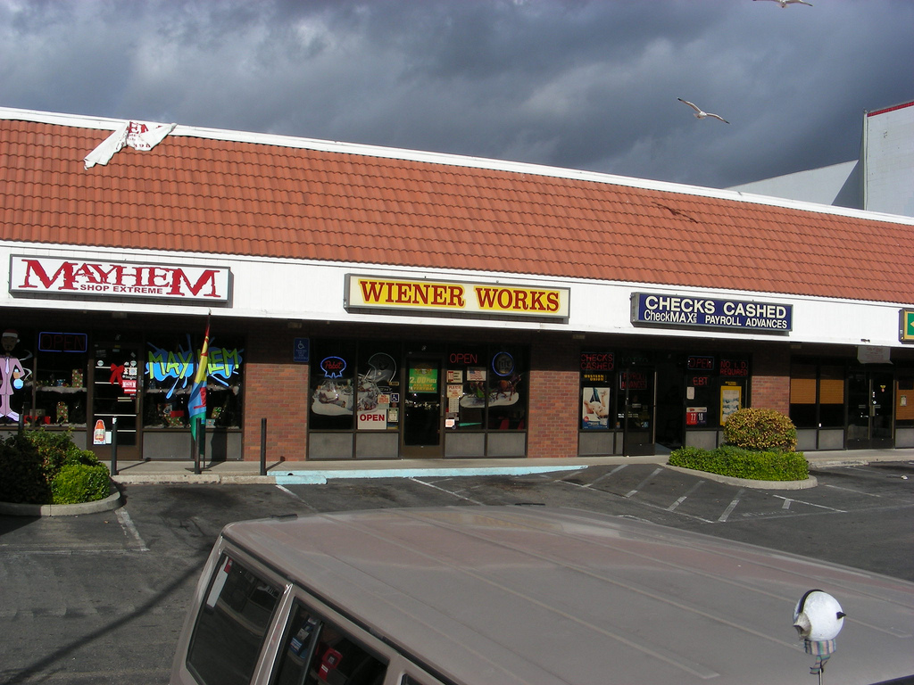
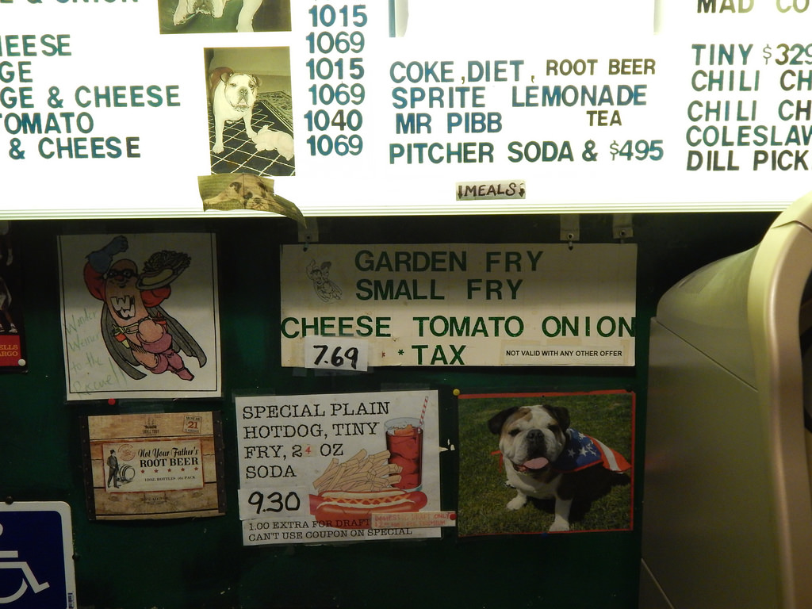
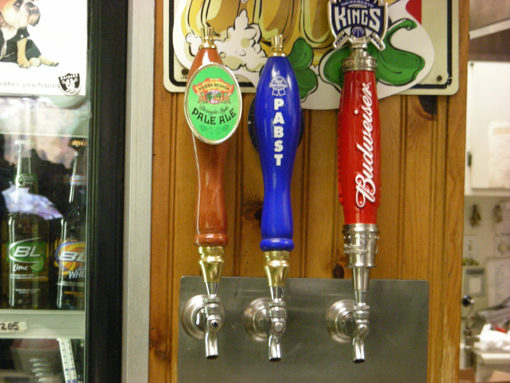
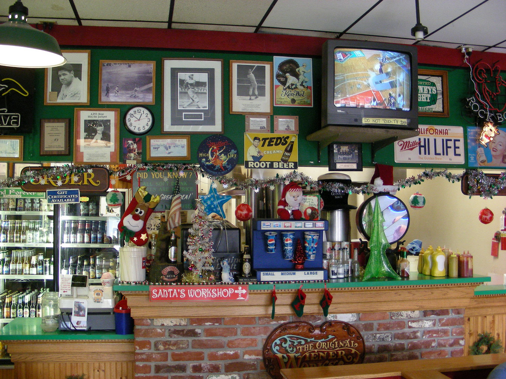

For the best hot dogs and hamburgers in Sacramento
Wiener Works
Located on Madison between Hemlock and Auburn Blvd.
(916) 334-8711
5207 Madison Ave, #C, Sacramento, CA 95841
Get map
Like us on Facebook
$2.25 Pints all day every day! (Sierra Nevada $3.25).
Monday - Friday 11:00am - 7:00pm
Saturday 11:00 AM - 7:00 PM
Sunday 11:00 AM - 4:00 PM

Home of the Wonderdog!
14 inches of hot dog on a loaf of soft french bread.
A restaurant specializing in hot dogs, sausages, and kraut dogs. We also serve 100% real beef burgers. We cut fresh fries to order from real potatoes. We serve very large portions. We have an extremely large selection of beer, and it changes as brands come and go, so you can expect something new occasionally. We sell $2.25 pints all day every day (Sierra Nevada $3.25). Did we mention we serve very large portions?
GrubHub now delivers Wienerworks!!!
We now accept credit cards at the register


$2.25 Pints all day every day! (Sierra Nevada $3.25)
Budweiser, Pabst Blue Ribbon, and Sierra Nevada Pale Ale on tap

We have an ATM machine now, so you don't need to bring cash anymore.

A typical meal for 4


#38 - 14 inch chili cheese dog with all the fixixns
Fixins - Cheese, relish, onions, tomatoes, saurkraut, coleslaw, ketchup, and mustard

#4 - Beer steamed 7 inch all beef dog with all the fixins except cheese

#23 - Gutbuster 1/3 pound sausage with mustard

The Mad cow burger with all the fixins
Fixins- Ketchup, mayo, tomato, onion, lettuce, and pickle chips.


Tiny fries

Large chili cheese onion fries

Too much to eat? No problem, we'll wrap it up for you. Wrapped in it's paper, then foil, then bagged.
The next visit. (I program the website, so we take pictures of our own food.) I can honestly say that the vegetables here are good. Even the tomatoes.


Here are some pictures of the inside. It's a friendly atmosphere. Great for watching the game, and having fun.


 Deadpool 2 is coming out in 2018. Love that Reynolds wrap (The Deadpool costume).
Deadpool 2 is coming out in 2018. Love that Reynolds wrap (The Deadpool costume).Contact web designer